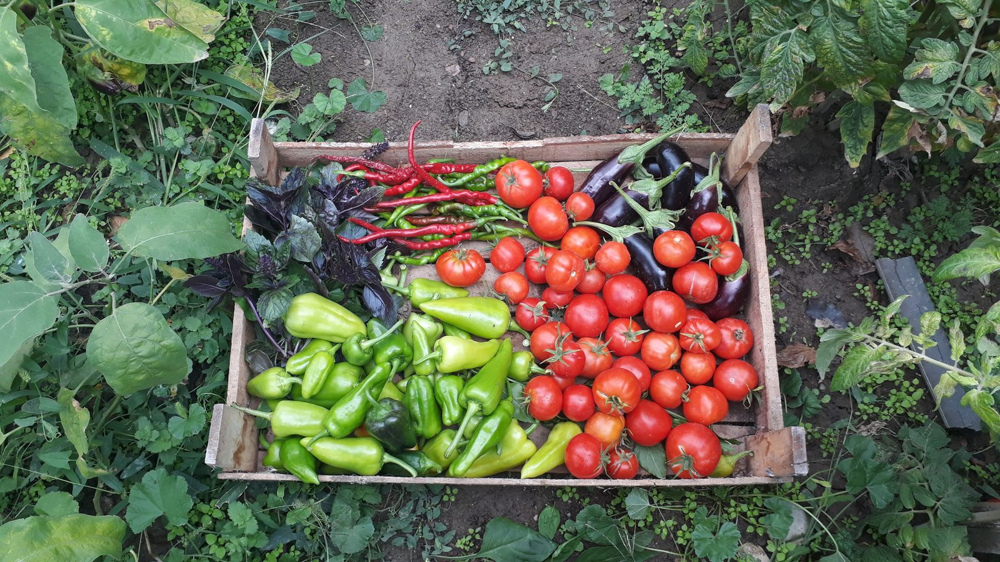

Itapema · Educação
Itapema · EducaçãoIFSC abre 30 vagas de graduação em Gestão Pública em Itapema, e a inscrição vai até 25 de setembro
O que a região tem de ensino público gratuito perto de casa.
A Prefeitura de Itapema publicou nesta terça-feira, 22, um novo aviso de abertura da Chamada Pública 08.013.2026, que escolhe os agricultores familiares que vão fornecer comida para a merenda das escolas municipais. A sessão pública fica para sexta-feira, 25 de setembro, às 14h, na Sala de Licitações da Prefeitura. É a terceira data marcada para a mesma sessão em setembro: a primeira era dia 11, o aviso de suspensão cita o dia 18, e agora é o dia 25. Abrimos os quatro documentos da chamada no Diário Oficial dos Municípios e montamos a linha do tempo, de 16 de julho até hoje.
Em 30 segundos · Modo de Leitura, formato original Santa Informa
Itapema tem uma chamada pública aberta.
O número dela é 08.013.2026.
Ela escolhe quem vende comida para a merenda.
Só entra agricultor familiar.
Também grupo formal, grupo informal e EFR.
A comida vai para a rede municipal de ensino.
A sessão pública foi remarcada de novo.
Agora é 25 de setembro, às 14h.
Na Sala de Licitações da Prefeitura.
Avenida Nereu Ramos, 134, fundos, Centro.
É a terceira data da mesma sessão.
A primeira era 11 de setembro.
O aviso de suspensão fala em 18 de setembro.
E a de agora é 25.
A suspensão saiu em 17 de setembro.
O motivo escrito é análise técnica.
Quem analisa é a Secretaria de Educação.
O edital foi aberto em 16 de julho.
Os documentos foram entregues até 13 de agosto.
De lá para cá são 43 dias.
A lei federal manda usar 30% do PNAE.
Trinta por cento comprados direto de quem planta.
O aviso não traz valor estimado.
Nem a lista de produtos.
Nem quantos fornecedores entregaram papel.
A sessão é aberta a quem quiser assistir.
Poder PúblicoPublicada em Redação Santa Informa

A Prefeitura de Itapema publicou nesta terça-feira, 22, um novo aviso de abertura da Chamada Pública 08.013.2026. A sessão pública que define quem vai fornecer ficou marcada para 25 de setembro, às 14h, na Sala de Licitações da Prefeitura, na Avenida Nereu Ramos, 134, fundos, no Centro. É a terceira data marcada para essa mesma sessão neste mês. O aviso está assinado pelo secretário municipal de Educação, Valdir Nesi Filho, e a comissão de contratação foi nomeada pela portaria 271/2026.
Chamada pública não é pregão. Ela existe para comprar comida direto de quem planta. Podem entrar fornecedores individuais, grupos formais, grupos informais e o empreendedor familiar rural, o EFR. O que for comprado vai para a merenda dos alunos da rede municipal de ensino de Itapema. O próprio aviso cita como base a Lei 11.947/2009 e a Resolução FNDE/CD 004/2026.
O primeiro aviso foi assinado em 16 de julho e publicado no Diário no dia 17. Ele abria a entrega de documentos a partir das 12h de 20 de julho, com prazo final às 15h de 13 de agosto, e marcava a abertura dos documentos para as 15h01 daquele mesmo dia 13. Depois veio o aviso assinado em 4 de setembro e publicado em 8 de setembro, que chamava a sessão pública para 11 de setembro, às 14h. Em 17 de setembro, às 17h41, a Prefeitura publicou a suspensão. O texto diz que ela decorre "da necessidade de aguardar a análise técnica da Secretaria Municipal de Educação acerca dos documentos técnicos que instruem o certame", e promete divulgar a reabertura depois do parecer. A reabertura saiu agora. Entre o fim da entrega de documentos e a nova sessão são 43 dias.
O aviso de suspensão diz que ficava suspensa a sessão "anteriormente designada para o dia 18 de setembro de 2026, às 14h00min". Só que o aviso publicado no Diário em 8 de setembro marcava 11 de setembro, não 18. Procuramos no Diário Oficial dos Municípios todas as publicações da Prefeitura de Itapema entre 8 e 18 de setembro com o termo "chamada pública". Apareceram duas, a abertura do dia 8 e a suspensão do dia 17. Não localizamos no Diário o aviso que teria levado a sessão do dia 11 para o dia 18.
O artigo 14 da Lei 11.947/2009 manda que, do total repassado pelo FNDE dentro do Programa Nacional de Alimentação Escolar, no mínimo 30% seja usado na compra direta de gêneros da agricultura familiar e do empreendedor familiar rural. É esse piso que faz a chamada pública existir separada das compras normais de alimento. O FNDE repete a regra na página do programa. Para o produtor da região, a conta é simples: essa fatia da merenda de Itapema só pode ser vendida por quem se encaixa no perfil.
O resumo de 30 segundos está no topo e a versão completa é o texto acima. Aqui ficam as três leituras da casa sobre o mesmo assunto.
Clara, a otimista
Gosto de lembrar o que esse edital significa na prática. Uma parte do que vai para o prato da criança na escola municipal precisa sair de quem planta perto daqui, por força de lei. Não é favor nem programa de ocasião, é regra federal desde 2009, e a Prefeitura está cumprindo o caminho formal para usá-la.
E tem um detalhe que passa batido: a suspensão veio com motivo escrito e com a promessa de divulgar a reabertura. Cinco dias depois, a reabertura saiu mesmo, no Diário, com data e endereço. Processo que para e volta com aviso público é processo que dá para acompanhar de fora, e isso vale para o agricultor que quer vender.
Seu Prudêncio, o criterioso
Merece atenção o calendário. Os documentos foram entregues até 13 de agosto e a sessão que define os fornecedores acontece 43 dias depois, se sair na sexta. Quem entregou papel em agosto está parado desde então, e produtor pequeno planeja plantio e colheita em cima de contrato. Vale acompanhar se a data de sexta se sustenta.
A divergência de data também merece atenção, e aqui não falo de má-fé de ninguém. O aviso publicado marcava dia 11 e a suspensão fala em dia 18. Pode ter havido remarcação comunicada por outro canal, e-mail aos interessados ou portal de licitações, o que é comum. Uma sugestão útil: quando a data muda, publicar o aviso no Diário também, porque é ali que quem está de fora procura.
Dito isso, o mérito da coisa é claro. Suspender um certame para esperar parecer técnico da Secretaria de Educação é melhor do que tocar a sessão com documento mal instruído e ter que anular depois. Anulação custa meses. Cinco dias de espera com motivo escrito é decisão defensável e conta a favor de quem tomou.
Caco, o sarcástico
Três datas para a mesma sessão em um mês só. Dia 11, dia 18, dia 25. Se mantiver o ritmo de uma sexta por semana, dá para fazer assinatura anual e nunca perder um episódio. O melhor é que o dia 18 nunca apareceu no Diário, ele só existe na frase que cancelou ele. Data fantasma tem essa graça.
Enquanto isso o tomate não espera parecer técnico para amadurecer. Quem plantou em julho olhando esse edital já colheu, já vendeu na feira e já plantou de novo.
Agora sem ironia: se você é agricultor familiar e quer vender para a merenda de Itapema, a sessão é sexta, às 14h, na Avenida Nereu Ramos, 134, fundos. É pública, dá para ir e ver.
Fontes: a nova data da sessão, o endereço, o objeto da chamada, a portaria 271/2026 e a assinatura do secretário de Educação estão no aviso de abertura publicado em 22 de setembro de 2026. O motivo e a data citada da suspensão estão no aviso de suspensão de 17 de setembro. A sessão marcada para 11 de setembro está no aviso de abertura publicado em 8 de setembro, e os prazos de entrega de documentos, de 20 de julho a 13 de agosto, estão no extrato da chamada pública publicado em 17 de julho. Abrimos os quatro documentos por inteiro. A busca por publicações da Prefeitura de Itapema com o termo "chamada pública" entre 8 e 18 de setembro foi feita por nós no Diário Oficial dos Municípios de Santa Catarina em 22 de setembro de 2026. O piso de 30% está no artigo 14 da Lei 11.947/2009 e é repetido na página do PNAE no FNDE. O curso do IFSC no Polo UAB de Itapema, cuja inscrição também termina em 25 de setembro, foi assunto da nossa matéria de 5 de setembro.
Itapema · EducaçãoO que a região tem de ensino público gratuito perto de casa.
 Itapema · Educação
Itapema · EducaçãoPrazo que corre em cima do feriado, com um dia a menos de expediente.
 Itapema · Poder Público
Itapema · Poder PúblicoTrês projetos de resolução da Mesa Diretora tratam da Casa por dentro.